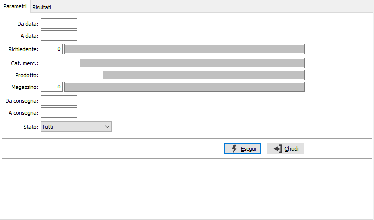
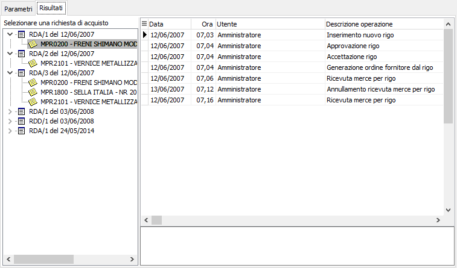
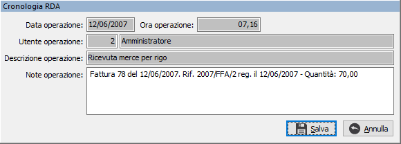

Gestione cronologia richieste di acquisto
La procedura, attiva solo se specificato in configurazione, consente di analizzare, stampare, inserire, variare o cancellare i movimenti di cronologia delle righe richieste.
E' possibile attivare la stampa di quanto elaborato e visualizzato nella sezione Risultati utilizzando il bottone Stampa o Anteprima della tool bar.
La sezione Parametri consente di selezionare le richieste di acquisto che interessano.

DA DATA: indica la data con cui iniziare la selezione delle richieste per effettuare l'operazione selezionata.
A DATA: indica la data con cui terminare la selezione delle richieste per effettuare l'operazione selezionata.
RICHIEDENTE: indica il codice dell'utente che ha presentato la richiesta da utilizzare per la selezione dei documenti. Sul campo sono disponibili le funzioni di ricerca (F9) sulla tabella stessa.
CATEGORIA MERCEOLOGICA: indica il codice della categoria merceologica da utilizzare per la selezione delle richieste. Sul campo sono disponibili le funzioni di ricerca (F9) sulla tabella stessa.
PRODOTTO: indica il codice del prodotto da utilizzare per la selezione delle richieste. Sul campo sono disponibili le funzioni di ricerca (F9) sulla tabella stessa.
MAGAZZINO: indica il codice del magazzino da utilizzare per la selezione delle richieste. Sul campo sono disponibili le funzioni di ricerca (F9) sulla tabella stessa.
DA CONSEGNA: indica la data di consegna con cui iniziare la selezione delle richieste per effettuare l'operazione selezionata.
A CONSEGNA: indica la data di consegna con cui terminare la selezione delle richieste per effettuare l'operazione selezionata.
STATO: definisce lo stato di avanzamento delle righe relative alle richieste da analizzare:
tutti;
in valutazione;
approvato;
accettato;
generata richiesta di offerta;
generato ordine fornitore;
ricevuta merce
respinto.
La pressione del pulsante Esegui effettua la selezione e riporta nella pagina dei Risultati le richieste selezionate. La parte di sinistra consente di spostarsi tra le righe delle varie richieste selezionate; per ogni riga vendono visualizzati nella parte di destra i movimenti di cronologia.

Per ogni movimento generato in automatico sarà possibile effettuare solo la variazione che consentirà l'inserimento di note relative all'operazione; sarà comunque possibile inserire, variare o cancellare nuovi movimenti di tipo manuale. Utilizzando i tasti funzione F3 (modifica), F4 (inserisci) o F5 (cancella) oppure il menù del pulsante destro del mouse. Il doppio clic sul movimento porterà automaticamente in variazione; le funzioni di inserimento e variazione si effettuano direttamente dalla finestra sottostante.

La pressione del bottone Stampa o Anteprima della tool bar consente la produzione di un report che riporta i movimenti di cronologia delle richieste selezionate.